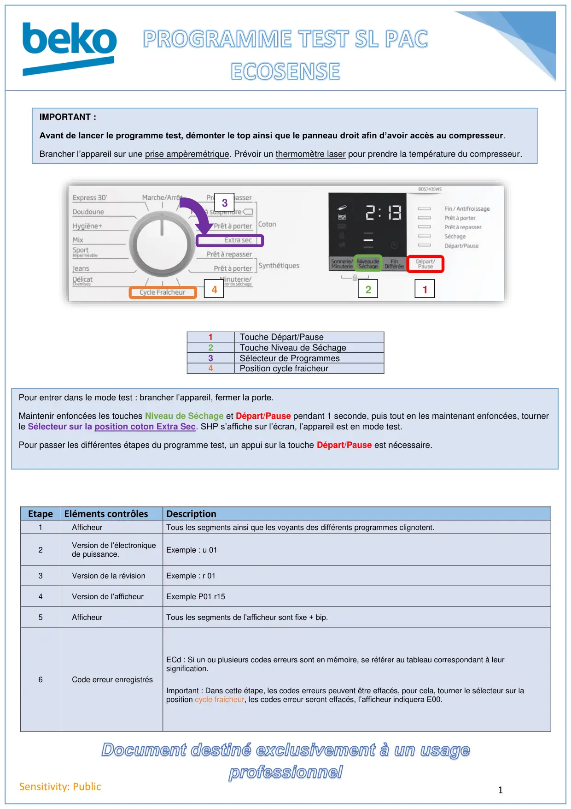
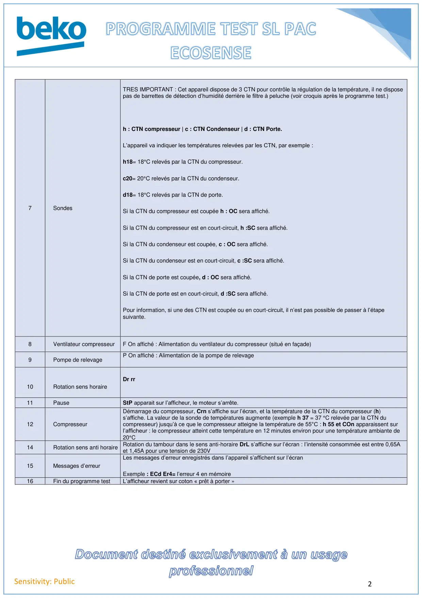
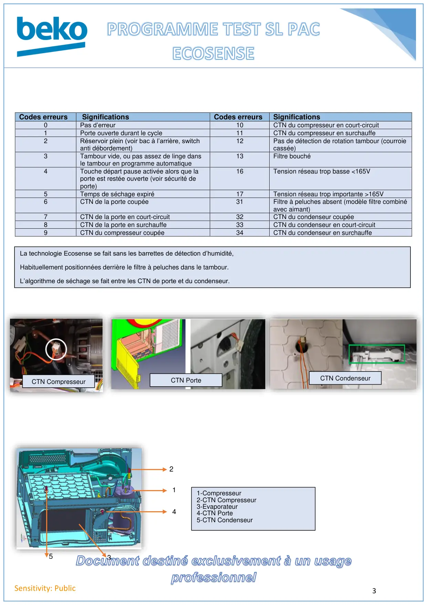
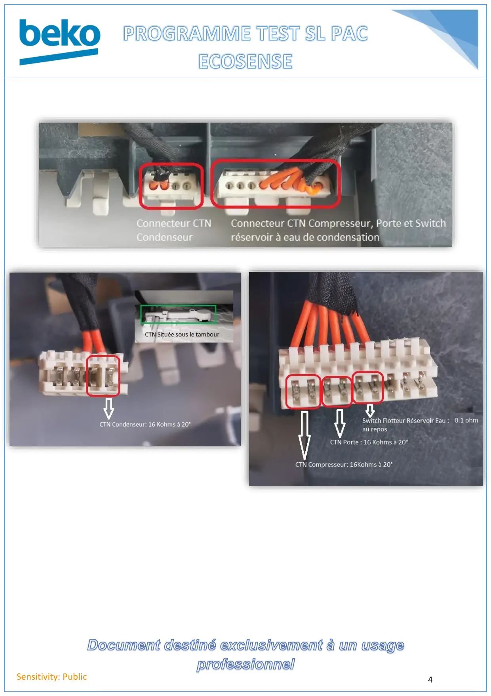

Prog Test seche linge PAC Ecosense 3CTN

1Sensitivity: Public1Touche Départ/Pause2Touche Niveau de Séchage3Sélecteur de Programmes4Position cycle fraicheurEtapeEléments contrôlesDescription1AfficheurTous les segments ainsi que les voyants des différents programmes clignotent.2Version de l’électroniquede puissance.Exemple : u 013Version de la révisionExemple : r 014Version de l’afficheurExemple P01 r155AfficheurTous les segments de l’afficheur sont fixe + bip.6Code erreur enregistrésECd : Si un ou plusieurs codes erreurs sont en mémoire, se référer au tableau correspondant à leursignification.Important : Dans cette étape, les codes erreurs peuvent être effacés, pour cela, tourner le sélecteur sur laposition cycle fraicheur, les codes erreur seront effacés, l’afficheur indiquera E00.IMPORTANT :Avant de lancer le programme test, démonter le top ainsi que le panneau droit afin d’avoir accès au compresseur.Brancher l’appareil sur une prise ampèremétrique. Prévoir un thermomètre laser pour prendre la température du compresseur.123Pour entrer dans le mode test : brancher l’appareil, fermer la porte.Maintenir enfoncées les touches Niveau de Séchage et Départ/Pause pendant 1 seconde, puis tout en les maintenant enfoncées, tournerle Sélecteur sur la position coton Extra Sec. SHP s’affiche sur l’écran, l’appareil est en mode test.Pour passer les différentes étapes du programme test, un appui sur la touche Départ/Pause est nécessaire.4
1 / 4
2Sensitivity: Public7SondesTRES IMPORTANT : Cet appareil dispose de 3 CTN pour contrôle la régulation de la température, il ne disposepas de barrettes de détection d’humidité derrière le filtre à peluche (voir croquis après le programme test.)h : CTN compresseur | c : CTN Condenseur | d : CTN Porte.L’appareil va indiquer les températures relevées par les CTN, par exemple :h18= 18°C relevés par la CTN du compresseur.c20= 20°C relevés par la CTN du condenseur.d18= 18°C relevés par la CTN de porte.Si la CTN du compresseur est coupée h : OC sera affiché.Si la CTN du compresseur est en court-circuit, h :SC sera affiché.Si la CTN du condenseur est coupée, c : OC sera affiché.Si la CTN du condenseur est en court-circuit, c :SC sera affiché.Si la CTN de porte est coupée, d : OC sera affiché.Si la CTN de porte est en court-circuit, d :SC sera affiché.Pour information, si une des CTN est coupée ou en court-circuit, il n’est pas possible de passer à l’étapesuivante.8Ventilateur compresseurF On affiché : Alimentation du ventilateur du compresseur (situé en façade)9Pompe de relevageP On affiché : Alimentation de la pompe de relevage10Rotation sens horaireDr rr11PauseStP apparait sur l’afficheur, le moteur s’arrête.12CompresseurDémarrage du compresseur, Crn s’affiche sur l’écran, et la température de la CTN du compresseur (h)s’affiche. La valeur de la sonde de températures augmente (exemple h 37 = 37 °C relevée par la CTN ducompresseur) jusqu’à ce que le compresseur atteigne la température de 55°C : h 55 et COn apparaissent surl’afficheur : le compresseur atteint cette température en 12 minutes environ pour une température ambiante de20°C14Rotation sens anti horaire Rotation du tambour dans le sens anti-horaire DrL s’affiche sur l’écran : l’intensité consommée est entre 0,65Aet 1,45A pour une tension de 230V15Messages d’erreurLes messages d’erreur enregistrés dans l’appareil s’affichent sur l’écranExemple : ECd Er4= l’erreur 4 en mémoire16Fin du programme testL’afficheur revient sur coton « prêt à porter »
2 / 4
3Sensitivity: PublicCodes erreursSignificationsCodes erreursSignifications0Pas d’erreur10CTN du compresseur en court-circuit1Porte ouverte durant le cycle11CTN du compresseur en surchauffe2Réservoir plein (voir bac à l’arrière, switchanti débordement)12Pas de détection de rotation tambour (courroiecassée)3Tambour vide, ou pas assez de linge dansle tambour en programme automatique13Filtre bouché4Touche départ pause activée alors que laporte est restée ouverte (voir sécurité deporte)16Tension réseau trop basse <165V5Temps de séchage expiré17Tension réseau trop importante >165V6CTN de la porte coupée31Filtre à peluches absent (modèle filtre combinéavec aimant)7CTN de la porte en court-circuit32CTN du condenseur coupée8CTN de la porte en surchauffe33CTN du condenseur en court-circuit9CTN du compresseur coupée34CTN du condenseur en surchauffeCTN CompresseurCTN PorteCTN CondenseurLa technologie Ecosense se fait sans les barrettes de détection d’humidité,Habituellement positionnées derrière le filtre à peluches dans le tambour.L’algorithme de séchage se fait entre les CTN de porte et du condenseur.214351-Compresseur2-CTN Compresseur3-Evaporateur4-CTN Porte5-CTN Condenseur
3 / 4
4Sensitivity: Public
4 / 4